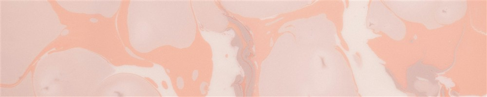

彩りのほうへ：2026年6月の月報

2026年6月の月報です。 とつぜんの話になりますが、個人事業主って、基本的にひとりで広報やPR業をするんですよね。 で、今月は、わたしの営業活動や広報活動を活発にしていくために、いろいろ勉強したり考えたり手を動かしたりすることが多かった月になりました。 その中で、ひとつ気づきがあって。 毎月書いているこの「月報」、わたしの活動や生活をお知らせするツールとして使っているんです。でも、もっと面白い読み物にもできるんじゃないか？って思ったんですよね。 というわけで、「読み物」を書くつもりで、今月はやっていきたいと思います。せっかく書くなら、面白いものを書きたいし、読みたいですよね。 じゃあ、まず、どこからテコ入れをしていくのか。 まず、サブタイトルをつけようと考えました。いつも「月報」だけでしたから。サブタイトルがあると、何について書いているか分かりやすいですよね。 今月は、「彩りのほうへ」。季節がどんどん夏めいてきて、明るい太陽と木々が美しい時季になります。自然の彩りと、わたしの生活の彩りとを掛け合わせて、このサブタイトルをつけてみました。 深呼吸を一回入れます。書き始めます。 ◇ ◇ ◇ 6月前半は、本当に、仕事机から遠ざかっていた月だったんです。 わたしの仕事机は、自分で言うのもなんですが、気に入っています。シンプルですっきりしている。たまに置くものも整理しているので、無駄なものが長い間放置されていることもありません。 そこから遠ざかって作業をする時間が、一時的に増えました。 仕事机のある部屋から遠ざかると、何が起きるか。 他の部屋に行きます。 それで、6月前半は、リビングで過ごす時間が圧倒的に多かったんです。 まずはこれまで仕事机ではできなかったことをたくさんやりました。裁縫をしまくりました。ポーチ、アロハシャツ、いろんなものを作りました。 でも、だんだん手作業にも飽きてきて。そうすると今度は、リビングの景色が気になってきます。 本棚を一掃しました。要らない本を処分して、必要なスペースをあけました。長い間飾っていただけのものは一旦しまい、こころから美しいと思うものだけを飾りました。 さらに、IKEAに行って、照明やラグなどを買いました。景色が一気に色づいて、ああ、わたしはこういうことが好きで、こういう部屋が好きなんだ、と驚きすらありました。 これがひとつの「彩り」。そして、彩りを生活に加えていくと、こころにも余裕が出てくるのを感じました。 崎山蒼志くんのライブ「good life, good people」に行きました。泣いた、泣きまくった。音楽って本当に良いな、と思いました。そして、崎山蒼志くんの音楽はずっと聴いてきたけれど、ライブがこんなにすごいなんて知らなかった、本当にもっと行きたいな、と思いました。 さらに、工程が多すぎてあきらめかけていたパッチワークドレスの製作に着手もし始めました。腰が重かっただけで、いざ始めてみると楽しい、楽しい。毎日1,2時間くらい作業をしています。土日はもうちょっとやっているかな。手を動かしているとこころが喜ぶ気がします。これもひとつの「彩り」といえるでしょう。 そういう「彩り」を加えている間に、仕事机から遠ざかる時期は終わり、こうしてまた帰ってきました。 不思議なもので、ちょっと遠ざかっている時期があるくらいのほうが、集中して仕事ができる側面があるかもしれません。帰ってきて、文学フリマで出す予定の新刊を作りはじめました。InDesignと格闘しながら頑張っています。 そして、ずっと停滞していた小説もちょっとだけ進みました。小説の骨ができた感じです。 本もいくつか読みました。 わたしの大好きな『悪文の構造 機能的な文章とは』を再読。法律をぎたぎたに解体して読んでいるところが大好き。 『日本語のレトリック 文章表現の技法』（これはもしかしたら5月に読んだかな？）。 『ソーンダーズ先生の小説教室』。これはロシア文学に浸れるすごい本です。大学の講義を再現している本とのことで、こんな講義があるなら絶対に出たいなあと思いつつ読みました。 他にも、いろいろ…… 60秒ドローイングの本を読んで実践したし、筋トレガイドも読んだね（！）。 仕事上だと、頭に書いた通り、広報・PRの本を流し読みしました。10冊くらいは触ったかな。でも結局、今の個人事業主やクリエイターが広報活動をしていくのって、まだメソッドが立っていない部分もかなりあるんじゃないかなという結論に至りつつあります。わたしが読んだ中では『ひとり広報の戦略書』がいちばん役に立ちましたが、これは結局「人と会おう、興味を持とう、アンテナを立てよう、行動しよう！」ということのように感じて、こう、なんでしょうね。鬱々とした小説を書いている身の人間がいきなり外向的な人間のペルソナをかぶって交流するというのは、とてもしんどいことでしょう、という感想も持ちました。 だから広報やPRを専門にする会社ができるんですね。わたしはまだまだひとりで広報をする立場にいるけれど、そのうち人に任せたい仕事No.1だな、なんて考えたりもしました。 やっぱり仕事は楽しいです。そしてものを作るのは楽しいです。 ものを作りながら、楽しんで生きていきたいと思います。 あ、そういえば、29日で34歳になりました。お祝いをいただいた皆様、ありがとうございました。 幼いころはわたしがこんな歳まで生きているとは到底思えなかったけれど、生きていて、しかも楽しく生きていて、これまでの人生で一番穏やかに生きていて、人生って本当にわからないなと思います。 これからもよろしくお願いします。 それじゃあ、月報はここまで。いつもと違った月報になったかな。わたしは書いていてとても楽しかったです。 みなさんにも読んでもらって面白いものが書きたい、と、本当に思うようになりました。 書けるといいね。 それじゃあ、またね！